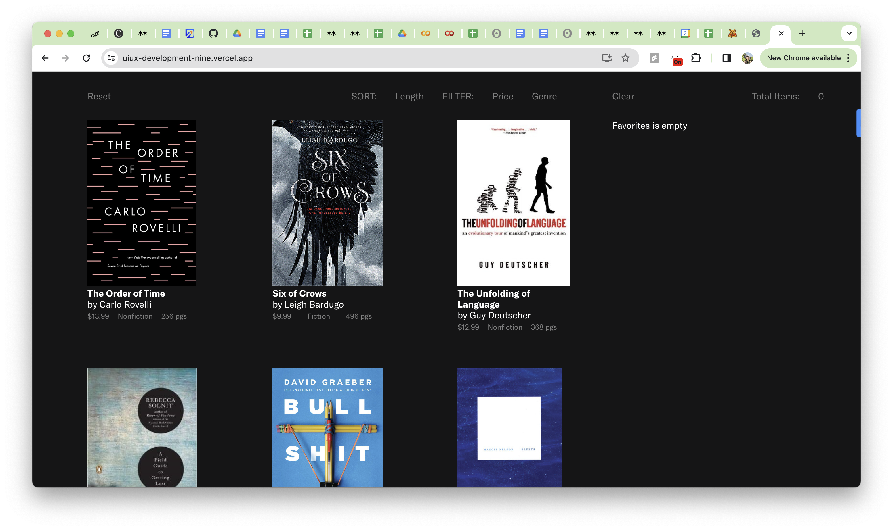
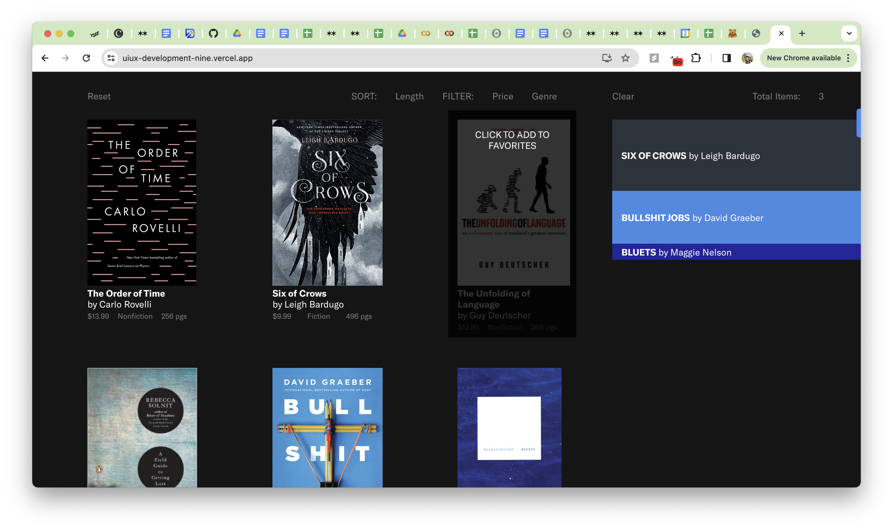
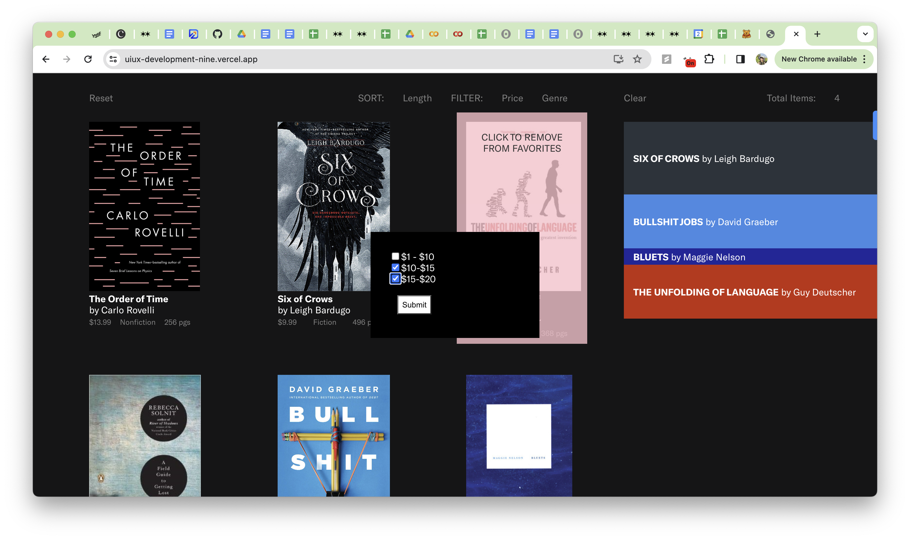

Development Project
Overview
The development project was an several-week-long exercise where we synthesized design and development strategies, and developed an interactive interface with an internal data state.
Specifically, I created a site that investigated and implemented the favoriting feature, as seen on many sites in different forms.
Part 1: Competitive Analysis
| Features |
Pinterest |
Spotify |
Instagram |
| Save to subfolders |
Yes |
Yes |
Yes |
| Create new subfolder from the initial save function |
Yes |
Yes |
Yes |
| Other subfolders pop up on second click |
Yes |
Yes |
Yes |
| Other subfolders pop up on initial save click |
Yes |
Yes |
Yes |
| Search within the modal of subfolders |
Yes |
Yes |
Yes |
| Separation of what subfolder to save to an the save button |
Yes |
Yes |
Yes |
| Separate popup after save |
Yes |
Yes |
Yes |
I looked at Spotify, Pinterest, and Instagram to see how they implemented their favoriting functions.
Which factors of each website were most / least successful and why? Use the design principles (along with common sense) discussed in class to justify your thoughts.
While the favorite functionality was generally quite similar across the board, something they differed on was their pathway to saving items in subfolders. All of the products had subfolder capabilities, but it took more flicks to get to the different subfolders from Pinterest and Spotify, However, Pinterest has an algorithm that predicts with reasonable accuracy which board you hope to save the image/item to, which decreases the potential need to select a specific subfolder. As discussed in class, decreasing the amount of clicks to get to a desired outcome, in line with Amazon’s 1 click shopping, is ultimately a goal. Spotify automatically saves an item to your “liked songs”, which then requires you to go into a separate modal and switch it to a different playlist if that was not your original intent.
Given these reflections, how would you implement your own list-based interface? You will have the chance to build your own about anything, so begin brainstorming ideas!
I hope to implement subfolders if I have time, but it is not a requirement for this assignment. I plan on building a bookstore interface, which a bookshelf on the left and a stack of books on the right, but the sorting of the books could theoretically be displayed as bookends. Because it’s a single page requirement, ideally I could click and drag, or have some other way that connects the subfolders with the fewest amount of clicks. Generally, I hope to implement favoriting, sorting into subfolders, deleting from subfolders, and viewing subfolders.
Write a few sentences in your hand-in about the intention of your app and how you are incorporating filter, sort, and aggregation using your theme.
I want to make a bookstore interface, with the left side of the screen referencing a bookshelf and the right being a slack of books. I want to implement favoriting with a sorting into subfolders, make it easily viewable to see the books and book lengths, have the books be easily removable from the list of favorite, and to be able to view the subfolders by genre or for the user to create their own subfolder, if time permits.
Part 2: Implementation
Screenshots



The user can filter the shelf on the left based on genre and price and sort by length, and each book has a hover overlay that adds to and removes from the aggregator, depending on if the item is already in the aggregator. There is also a reset button to remove these filters. In the aggregator the books are displayed by spine, and their width is determined by the book length. There is an updatable count of the number of books in the aggregator, and a button to clear the books in the aggregator.
Reflections
Unfortunately I did not have time to implement the subfolders of the aggregator like I originally intended or mobile responsiveness, but have learned a lot about React from this process!